Talep
Müşteriden iş geldi. Müşteriler ekranından müşteriyi açın, sonra Projeler ekranından projeyi Talep aşamasında oluşturun.
Capproje, bir mobilya ve ahşap işleri firmasının müşteri talebinden teslim tutanağına kadar olan bütün zincirini tek yerde tutar. Bu sayfa, hangi ekranın ne işe yaradığını, hangi düğmenin ne yaptığını ve işleri hangi sırayla yapmanız gerektiğini ekran görüntüleriyle anlatır.
Capproje'ye cep telefonu numaranız ve şifrenizle girersiniz. Kullanıcı adı yoktur; firmanızda size tanımlanan numara sizin kimliğinizdir. Numarayı 05xx xxx xx xx biçiminde, başında sıfırla yazın.
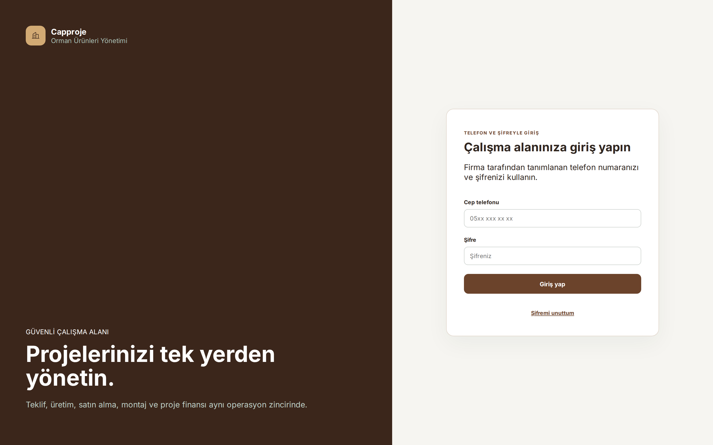
Giriş ekranında Şifremi unuttum bağlantısına basın, numaranızı ve isterseniz yöneticinin sizi tanıyacağı kısa bir not yazın. Talebiniz firma yöneticinize düşer; yönetici kimliğinizi doğruladıktan sonra size yeni bir geçici şifre verir.
Güvenlik gereği program, girilen numaranın sistemde kayıtlı olup olmadığını size söylemez — söyleseydi, yabancı biri numara deneyerek firmanızda kimlerin çalıştığını öğrenebilirdi. Yeni şifreyi yöneticiniz size elden veya telefonla iletir.
Program içinde, sol menünün en altındaki adınızın yanında iki küçük simge vardır. Soldaki kişi simgesi Şifre ve oturumlar penceresini açar; buradan şifrenizi değiştirebilir, açık oturumlarınızı görebilirsiniz. Sağdaki çıkış simgesi programdan çıkar.
İşiniz bittiğinde çıkış simgesine basın. Tarayıcı sekmesini kapatmak oturumu kapatmaz.
Program tek bir düzen kullanır: solda menü, üstte arama ve durum çubuğu, ortada çalıştığınız ekran. Hangi bölümde olursanız olun bu üç parça yerinde durur.
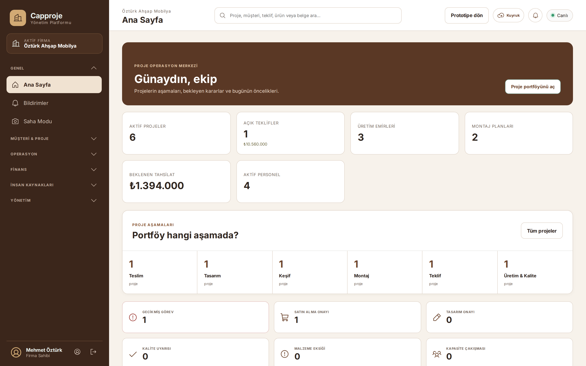
Menü altı başlık altında toplanmıştır: Genel, Müşteri & Proje, Operasyon, Finans, İnsan Kaynakları, Yönetim. Bir başlığa bastığınızda o başlık açılır, diğeri kapanır — böylece 40'tan fazla ekran aynı anda göz önüne yığılmaz.
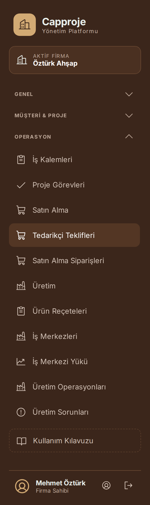
Yetkiniz olmayan ekranlar menüde hiç görünmez — bozuk değildir, size kapalıdır. Görmeniz gereken bir bölüm eksikse yöneticinizden rolünüze yetki eklemesini isteyin.
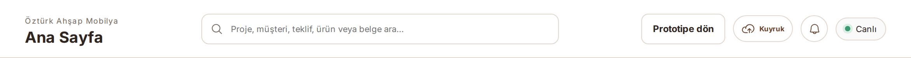
Telefonda sol menü ekranı kaplayan bir çekmeceye dönüşür. Ekranın altında her zaman duran dört kısayol ve bir Tüm Menü düğmesi vardır.
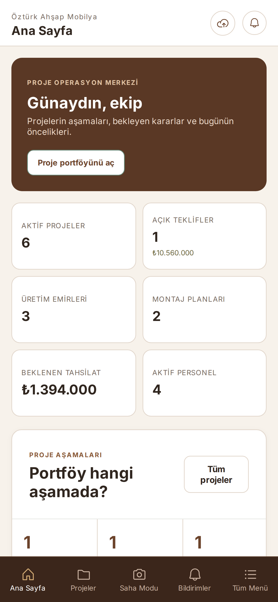
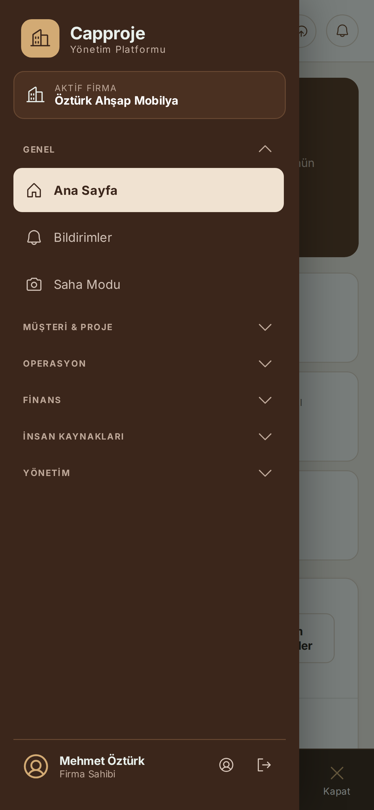
Program 40'tan fazla ekran içerir ama hepsi aynı kalıbı kullanır. Bu bölümü bir kez öğrendiğinizde, daha önce hiç açmadığınız bir ekranda bile ne yapacağınızı bilirsiniz. Örnekler Projeler ekranı üzerinden veriliyor.
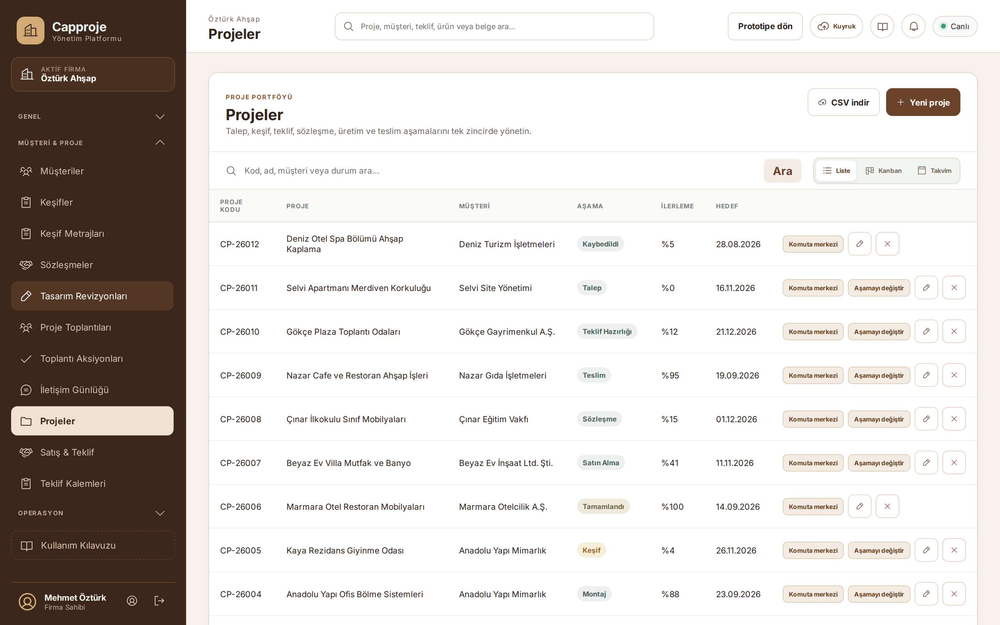
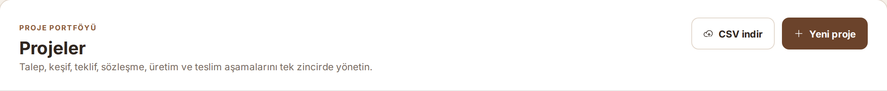
Arama kutusuna kod, ad, müşteri veya durum yazıp Ara düğmesine basın (Enter de çalışır). Sağdaki üç düğme aynı kayıtları farklı biçimde gösterir — bu düğmeler yalnız destekleyen ekranlarda çıkar:
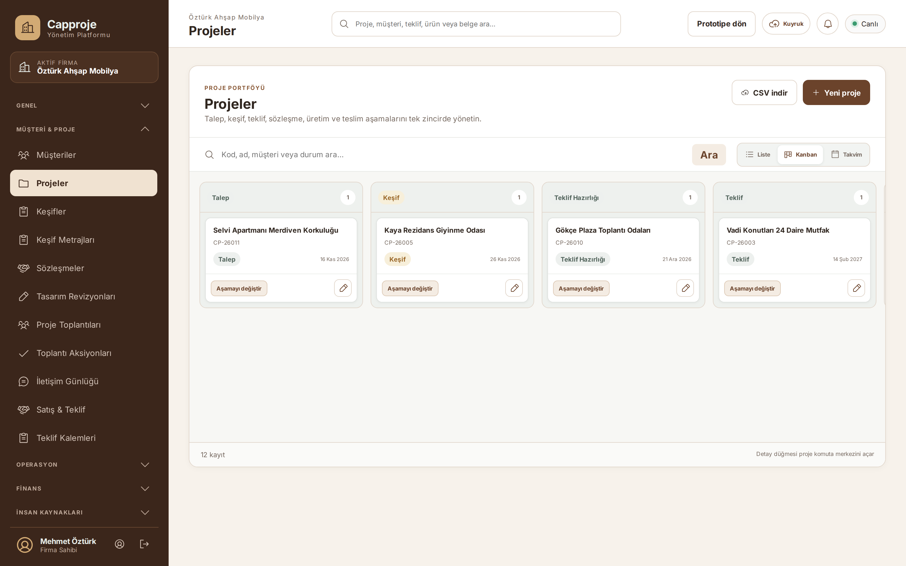
Ekran açıldığında en güncel 50 kayıt yüklenir. Aradığınız kayıt listede yoksa yok demek değildir — arama kutusunu kullanın. Tablonun altındaki sayı, firmanızdaki toplam kayıt adedidir.
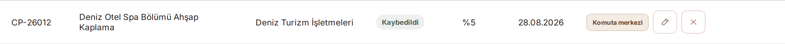
| Düğme | Ne yapar |
|---|---|
| Pano simgesi (veya Komuta merkezi) | Kaydın bütün alanlarını açar. Projelerde bu düğme özel bir ekran açar — 5. bölüme bakın. |
| Yazılı düğmeler (Onayla, Reddet, Aşamayı değiştir…) | Kaydın durumunu ilerleten iş akışı düğmeleridir. Hangi düğmenin çıkacağı kaydın o anki durumuna göre değişir. |
| Kalem simgesi | Kaydı düzenleme formunu açar. |
| Çarpı simgesi | Kaydı siler. Önce bir onay penceresi çıkar. |
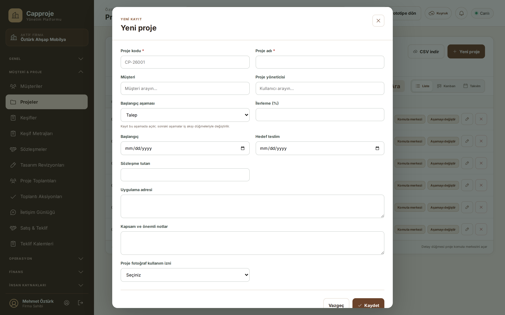
Çoğu kayıt türünde durumu formdan değiştiremezsiniz; durum yalnız satır sonundaki iş akışı düğmeleriyle ilerler. Bu bilerek böyledir: onaylanmış bir teklifin veya kesinleşmiş bir finans hareketinin elle "taslak"a çekilmesini engeller. Yeni kayıt açarken de yalnız baştaki durumları seçebilirsiniz — projede Talep ve Keşif gibi.
Çarpıya bastığınızda çıkan pencere kaydın adını gösterir ve onay ister. Kayıt başka yerlerde kullanılıyorsa (örneğin bir müşterinin projeleri varsa) program silmeyi güvenle reddeder ve size sebebini yazar. Bu bir hata değil, koruma mekanizmasıdır.
İnternet giderse ekranın en üstünde turuncu bir şerit çıkar. Bu durumda yalnız güvenli yeni kayıtlar oluşturabilirsiniz; onay, silme ve dosya işlemleri bağlantı bekler. Ayrıntı 9. bölümde.
Bir ekranı açtığınızda "Bu bölüme erişim yetkiniz yok" yazısı görüyorsanız kayıt silinmiş değildir; rolünüzde o yetki yoktur. Yöneticinize hangi ekranı görmeniz gerektiğini söyleyin.
Capproje'nin bel kemiği budur. Bir proje, aşağıdaki aşamalardan sırayla geçer. Aşama atlayamazsınız ve her aşamaya geçmeden önce program birkaç şartı kontrol eder. Bu yüzden "nereden başlayacağım?" sorusunun cevabı hep aynıdır: müşteri, sonra proje.
Müşteriden iş geldi. Müşteriler ekranından müşteriyi açın, sonra Projeler ekranından projeyi Talep aşamasında oluşturun.
Sahaya gidilir, ölçü alınır. Keşifler ekranında keşif kaydı açılır; ölçüler Keşif Metrajları ekranına mahal mahal girilir. Sahadayken telefondan Saha Modu'nu kullanmak en pratiğidir.
Metrajdan fiyat çıkar. Satış & Teklif ekranında teklif kaydı, Teklif Kalemleri ekranında satır satır ürün, miktar, birim fiyat ve maliyet girilir.
Teklif müşteriye sunulur. Müşteri cevabına göre teklif satırındaki Kabul et veya Reddet düğmesini kullanın. Reddederken kayıp nedenini yazmak zorunludur — bu veri sonra "neden kaybediyoruz?" sorusunu cevaplar.
Kabul edilen teklif satırında Projeye dönüştür düğmesi çıkar. Sözleşmeler ekranında ödeme modeli (hakedişli / avans-bakiye), avans oranı, teminat ve garanti süresi tanımlanır.
Tasarım Revizyonları ekranında 2D/3D çizimler yüklenir. Çizim önce iç kontrolden geçer, sonra Müşteriye sun ile müşteri onayına gider; müşteri onaylayınca Onayla, değişiklik isterse Reddet ve nedeni yazılır.
İş Kalemleri ve Ürün Reçetelerinden malzeme ihtiyacı çıkarılır, Malzeme İhtiyaç Planında stoktan ayrılır veya Satın Alma talebine dönüşür. Tedarikçi teklifleri karşılaştırılır, sipariş açılır, mal kabul yapılır.
Üretim ekranında emirler Üretime sal ile başlatılır, Üretim Operasyonları tek tek ilerletilir, Kalite Kontrolleri ile kontrol edilir. Çıkan sorunlar Üretim Sorunlarına yazılır.
Montaj ekranında saha planı, ekip ve tarihler tutulur. Sahada çıkan eksikler Teslim Eksiklerine yazılır.
Teslim & Kabul ekranında teslim tutanağı, müşteri imzası ve memnuniyet puanı kaydedilir.
Proje tamamlandı olarak kapanır. Hakedişler, son faturalar ve kârlılık bu aşamada kesinleşir.
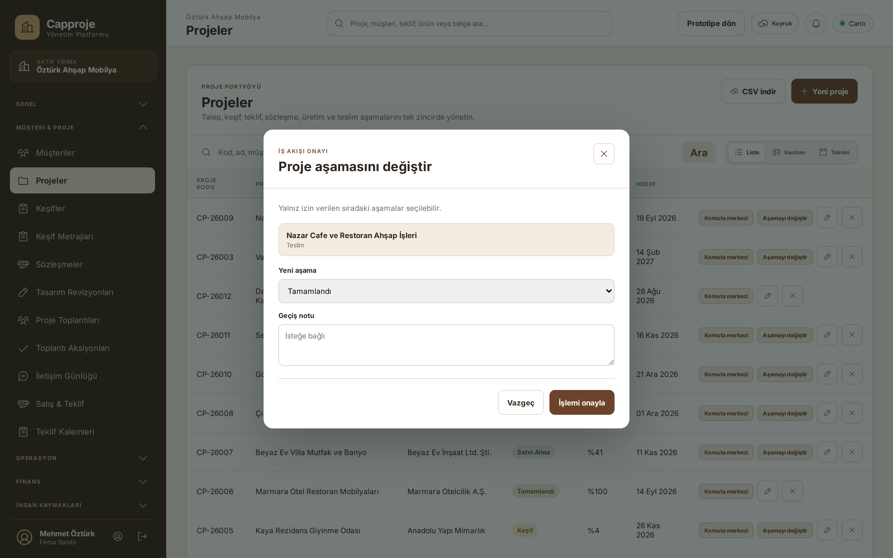
Aşama kapısındaki şartlardan biri sağlanmadıysa program geçişi durdurur ve hangi şartın eksik olduğunu yazar. Doğru davranış eksiği tamamlamaktır. Gerçekten istisna gerekiyorsa bunu yalnız firma sahibi / yönetici yapabilir ve en az 10 karakterlik bir gerekçe yazmak zorundadır. Gerekçe denetim kaydına işlenir.
Program o aşamaya ait hazır görevleri otomatik açar ve proje yöneticisine bildirim gönderir. Yani aşamayı ilerletmek sadece bir etiket değiştirmez, ekibe iş dağıtır. Proje Görevleri ekranında bu görevleri sorumlularına atayın.
Yukarıdaki on bir ad; proje listesindeki Aşama sütununda, kanban sütun başlıklarında, aşama değiştirme listesinde ve komuta merkezindeki zincirde birebir aynı yazılır. Farklı bir kelime görüyorsanız o bir aşama değil, başka bir kaydın durumudur.
Bir projenin durumunu öğrenmek için tek tek ekran dolaşmanız gerekmez. Projeler ekranında satırın sonundaki Komuta merkezi düğmesi, o projeyle ilgili her şeyi tek pencerede toplar.
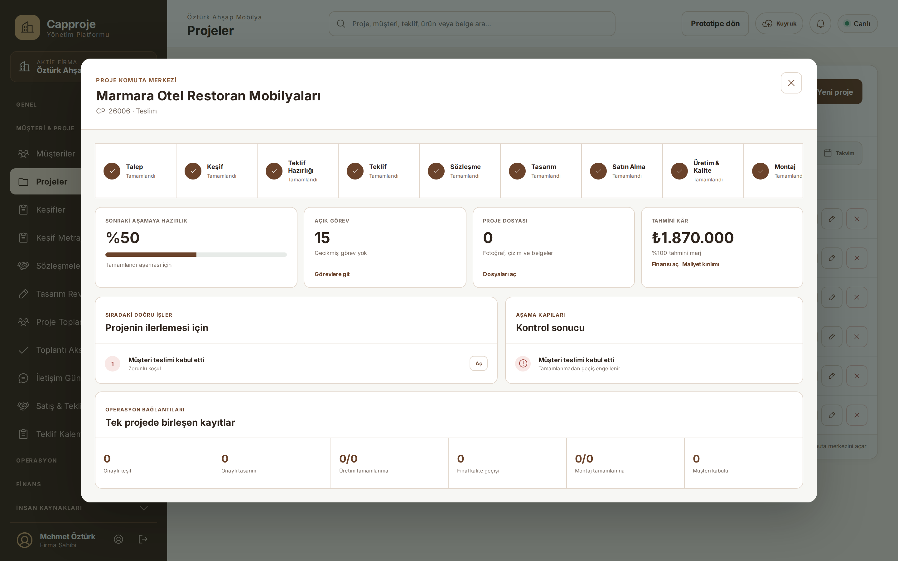
Sabah programı açtığınızda aktif projelerin komuta merkezine tek tek bakmak yerine Ana Sayfa'daki dikkat kutularına bakın; bir şey kırmızıysa oradan ilgili projenin komuta merkezine inin.
Ana sayfa dört kattan oluşur ve yukarıdan aşağıya "genel durum → nerede takıldık → ne oldu" sırasını izler.
Göremediğiniz bir modülün sayıları ana sayfada da görünmez. İki kullanıcının ana sayfası farklı olabilir; bu normaldir.
Sahadayken uzun formlar doldurmak zordur. Saha Modu bunun için vardır: bir kez aktif projeyi seçersiniz, sonra tek dokunuşla kayıt açarsınız. Seçtiğiniz proje telefonunuzda hatırlanır, her seferinde yeniden seçmezsiniz.
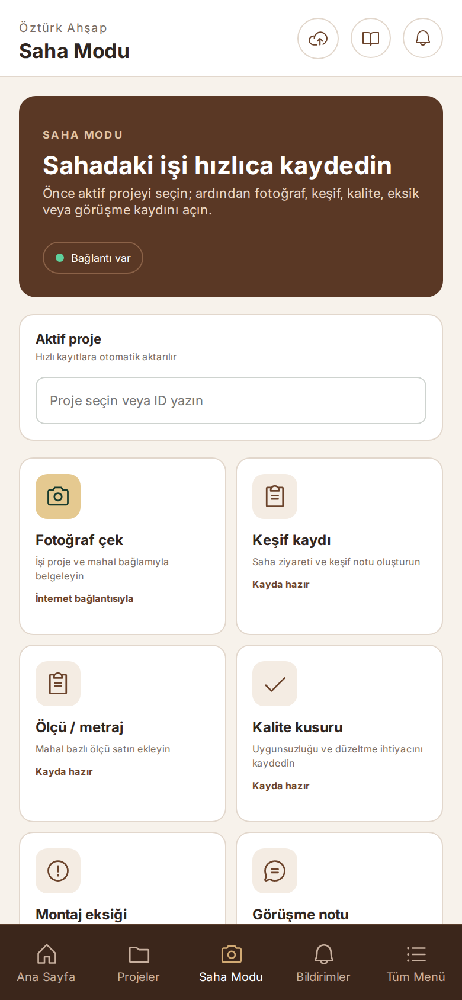
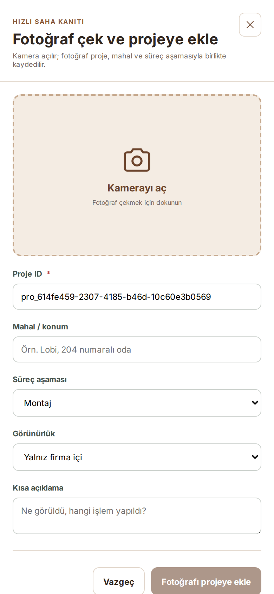
Kartın altında "Çevrimdışı da kaydedilir" yazıyorsa o kaydı internetsiz de açabilirsiniz; kayıt telefonunuzda bekler ve bağlantı gelince kendiliğinden gönderilir. "Bağlantı gerekli" yazanlar (fotoğraf yükleme gibi) internet ister.
Ekranın altındaki Günlük çalışma alanları bölümü sık kullanılan dört ekrana kısayoldur: Görevlerim, Montaj planı, Kalite kontrolleri, Proje fotoğrafları.
Programda iki ayrı arama vardır ve karıştırılmamalıdır.
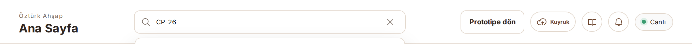
Bu arama bütün bölümlerde aynı anda arar: proje, müşteri, teklif, ürün, belge. Nerede olduğunu bilmediğiniz bir kaydı ararken bunu kullanın. Yazmayı bıraktıktan kısa süre sonra kendiliğinden arar, düğmeye basmanız gerekmez.
Bu arama sadece bulunduğunuz ekranda arar ve listeyi filtreler. Kod, ad, müşteri veya durum yazabilirsiniz. Listeyi temizlemek için kutuyu boşaltıp yeniden Ara deyin.
Program çevrimdışı çalışabilir ama her şeyi değil. Kural basittir: veri eklemek çoğunlukla mümkündür, veri değiştirmek ve onaylamak mümkün değildir. Çünkü onay ve silme işlemleri sunucudaki güncel duruma bakmak zorundadır.
| Çevrimdışıyken | Durum |
|---|---|
| Keşif, metraj, görev, kalite kusuru, montaj eksiği, görüşme notu eklemek | Çalışır — kayıt kuyruğa alınır |
| Fotoğraf ve dosya yüklemek | Bağlantı bekler |
| Onaylamak, reddetmek, aşama ilerletmek | Bağlantı bekler |
| Kayıt silmek, rol yetkisi değiştirmek, yedek almak | Bağlantı bekler |
| Finans hareketi oluşturmak | Bağlantı bekler |
Bekleyen kayıtlar cihazda en fazla 7 gün tutulur ve yalnız aynı kullanıcı ile aynı firmada eşitlenir. Sahadan döndüğünüzde bağlantıya girip kuyruğun boşaldığını görün.
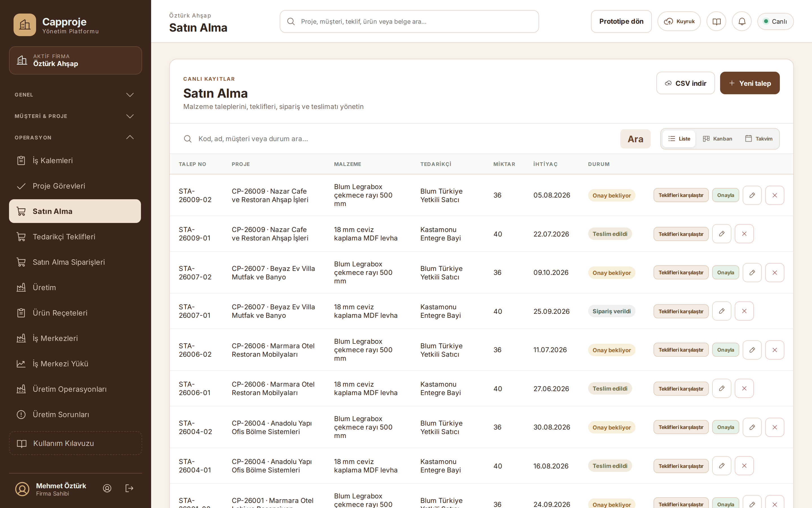
İş kalemine Ürün Reçetesi tanımladıysanız, reçete satırındaki Reçeteyi patlat düğmesi miktar ve fire payını kullanarak Malzeme İhtiyaç Planını kendiliğinden oluşturur. Oradan ihtiyaçları Stoktan ayır ile rezerve eder, eksik kalanı Satın alma talebi aç ile satın almaya gönderirsiniz. Üretim başlarken Üretime ver, iptal olursa Rezervasyonu bırak kullanılır.
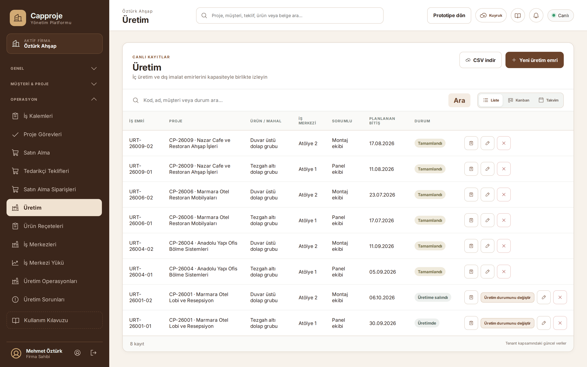
İş Merkezi Yükü ekranı, seçtiğiniz tarih aralığında her iş merkezinin kapasitesini, planlanan dakikayı ve doluluk yüzdesini yan yana gösterir. Kapasitesi aşan merkezler üstte uyarı olarak listelenir. Üretim planı yapmadan önce buraya bakın.
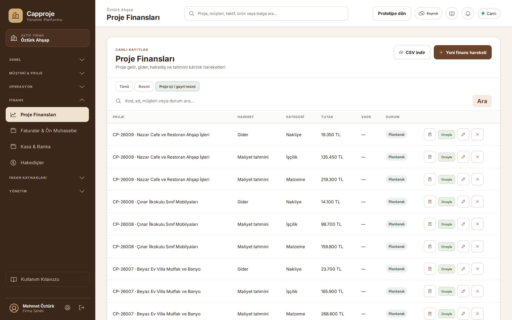
Muhasebede geçmişi silmek değil, düzeltmek esastır. Bu yüzden program onaylanmış bir hareketi değiştirmenize izin vermez; kimin ne zaman ne düzelttiği görünür kalır.
Faturalar & Ön Muhasebe ekranının üstünde Tümü · Resmi · Proje içi / gayri resmi sekmeleri vardır. Bu sekmeler yalnız hassas finans verisini görme yetkisi olan kullanıcılara açılır.
Sözleşmesi hakedişli olan projelerde Hakedişler ekranı dört adımlı bir zincir izler:
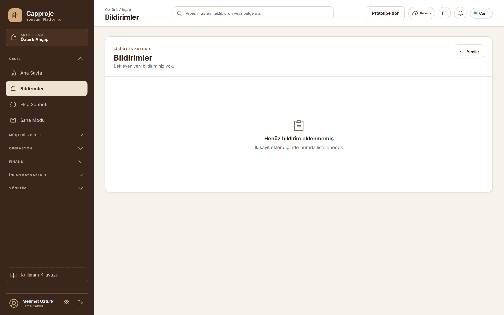
Bildirimler kendiliğinden oluşur: proje aşaması değiştiğinde, size görev atandığında, onayınızı bekleyen bir kayıt olduğunda.
Bu bölüm firma sahibi ve yöneticiler içindir.
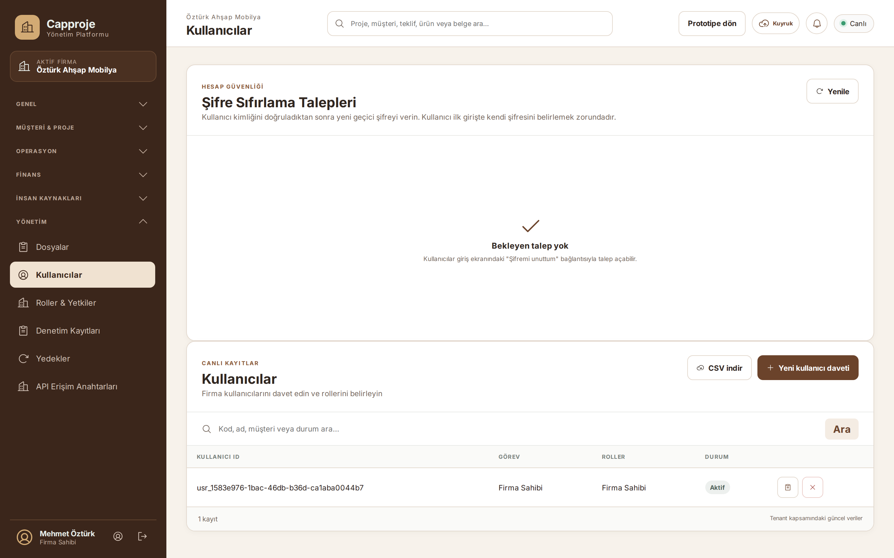
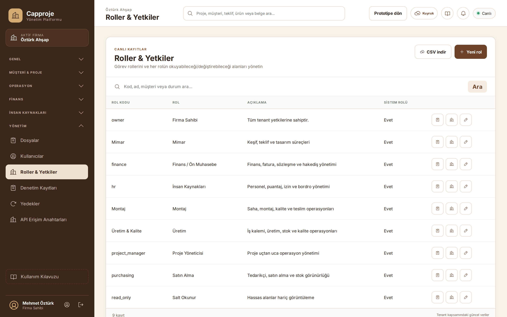
Bir rol satırındaki bina simgesine basarak o rolün yetkilerini açarsınız. Yetkiler, hangi bölüme ait olduklarına göre gruplanmıştır.
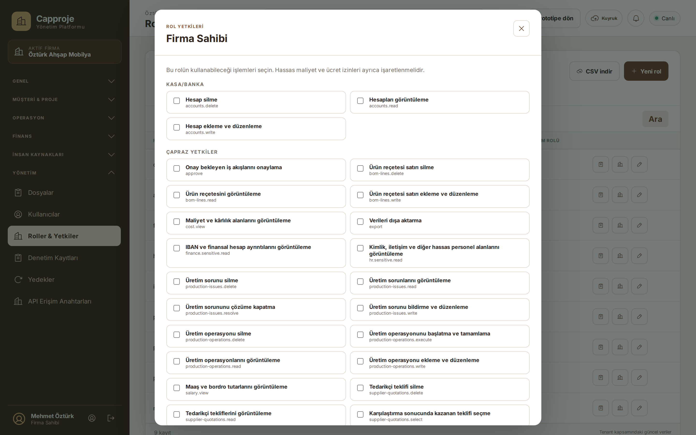
Bir kişinin projeyi görmesi, maliyetleri de görmesi anlamına gelmez. Maliyet görme ve ücret görme yetkileri ayrı kutulardır ve ayrıca işaretlenmelidir. Personelin maaşını yalnız bu yetkiye sahip kullanıcılar görebilir.
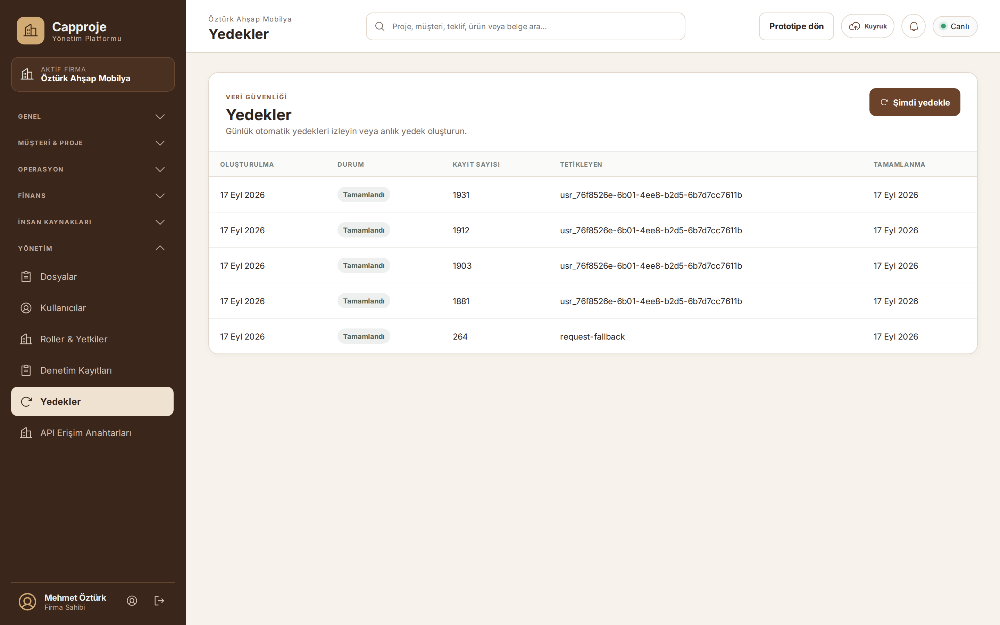
Büyük bir veri girişinden veya toplu düzeltmeden önce elle bir yedek almak iyi bir alışkanlıktır. Yedek listesinde her satırın durumu, kapsadığı kayıt sayısı ve kimin tetiklediği görünür.
Yönetim → Denetim Kayıtları kimin ne zaman hangi kaydı değiştirdiğini tutar. Salt okunurdur; hiç kimse — firma sahibi dahil — bu kayıtları düzenleyemez veya silemez. "Bu teklifi kim onaylamış?" sorusunun cevabı buradadır.
Başka bir programı Capproje'ye bağlamak için kullanılır. Anahtar oluşturulduğunda gizli değer yalnız bir kez gösterilir; kaybederseniz yenisini üretmeniz gerekir. Şüpheli bir durumda İptal et deyin — o anahtarı kullanan bağlantı anında erişimini kaybeder.
Menüde bir şey ararken "bu neydi?" derseniz buraya bakın.
| Ekran | Ne işe yarar |
|---|---|
| Ana Sayfa | Firmanın genel durumu, bekleyen kararlar, günün öncelikleri. |
| Bildirimler | Size özel iş kutusu: atanan görevler, onay bekleyenler, aşama değişiklikleri. |
| Saha Modu | Telefondan tek dokunuşla saha kaydı: fotoğraf, keşif, ölçü, kalite, eksik, görüşme, görev. |
| Ekran | Ne işe yarar |
|---|---|
| Müşteriler | Müşteri, karar verici, vergi ve ticari çalışma bilgileri. |
| Projeler | Tekliften montaj kapanışına kadar proje portföyü. Komuta merkezi buradan açılır. |
| Keşifler | Saha keşif randevusu, sorumlu, konum ve onay süreci. |
| Keşif Metrajları | Keşfe bağlı mahal, eleman ve ölçü bazlı metraj satırları. |
| Satış & Teklif | Teklifler, revizyonları, kabul/ret ve kayıp nedenleri. |
| Teklif Kalemleri | Teklifin ürün, miktar, satış fiyatı ve maliyet kırılımı. |
| Sözleşmeler | Ödeme modeli, avans, teminat, garanti ve imza yaşam döngüsü. |
| Tasarım Revizyonları | 2D/3D çizimlerin iç kontrolü ve müşteri onay revizyonları. |
| Proje Toplantıları | Haftalık proje, üretim ve saha toplantılarının karar kaydı. |
| Toplantı Aksiyonları | Toplantı kararlarının sorumlu, termin ve gerçekleşme takibi. |
| İletişim Günlüğü | Telefon, e-posta, WhatsApp, toplantı ve saha görüşmelerinin proje bazlı günlüğü. |
| Ekran | Ne işe yarar |
|---|---|
| İş Kalemleri | Proje, mahal ve ürün kırılımında ölçü, malzeme, üretim ve fiyat bilgisi. |
| Proje Görevleri | Proje iş planı, sorumlular, bağımlılıklar ve ilerleme. |
| Satın Alma | Malzeme talepleri, teklif toplama ve onay. |
| Tedarikçi Teklifleri | Aynı talebe gelen teklifleri fiyat, termin ve kalite olarak karşılaştırma. |
| Satın Alma Siparişleri | Onaylı taleplerden açılan siparişler ve mal kabul. |
| Tedarikçiler | Malzeme ve dış imalat tedarikçileri, yetkililer ve performans. |
| Stok Kartları | Malzeme kartı, rezerv, minimum seviye ve tercih edilen tedarikçi. |
| Malzeme İhtiyaç Planı | Proje ve iş kalemi bazında ihtiyaç, stok rezervasyonu ve eksik satın alma bağlantısı. |
| Stok Hareketleri | Giriş, çıkış, rezerv ve sayım düzeltmelerinin kesin kaydı. |
| Üretim | İç üretim ve dış imalat emirleri. |
| Ürün Reçeteleri | Bir adet iş kalemi için gereken malzemeler; fire payıyla malzeme planına dönüşür. |
| İş Merkezleri | Atölye ve dış imalat merkezleri, günlük kapasite ve saatlik maliyet. |
| İş Merkezi Yükü | Planlanan süre ile kapasiteyi karşılaştırır; darboğazı önceden gösterir. |
| Üretim Operasyonları | Üretim emrinin operasyon sırası, iş merkezi ve süre planı. |
| Üretim Sorunları | Sorun, yeniden işlem ve hurda kaydı; kâr kaybının kaynağı. |
| Kalite Kontrolleri | Girdi, üretim içi, final ve saha kontrolleri ile düzeltici faaliyetler. |
| Montaj | Saha hazırlığı, ekip planı, eksikler ve teslim tutanakları. |
| Teslim & Kabul | Müşteri teslimi, kabul imzası, memnuniyet puanı ve kapanış. |
| Teslim Eksikleri | Teslimde belirlenen eksiklerin sorumlu, termin ve kabul takibi. |
| Ekip & Kapasite | Ekiplerin, iş merkezlerinin ve dış kaynakların tarih bazlı kapasite planı. |
| Ekran | Ne işe yarar |
|---|---|
| Proje Finansları | Proje gelir, gider ve tahmini kârlılık hareketleri. |
| Faturalar & Ön Muhasebe | Cari, fatura ve ödeme takibi; resmi kayıtlar muhasebe programında kalır. |
| Kasa & Banka | Kasa, banka ve diğer ödeme hesaplarının güncel bakiyeleri. |
| Hakedişler | Sözleşmeye bağlı dönemsel hakediş, kesinti, fatura ve tahsilat süreci. |
| Ekran | Ne işe yarar |
|---|---|
| Personel | Özlük, görev ve çalışma durumu. |
| Puantaj | Günlük giriş-çıkış, normal çalışma ve fazla mesai. |
| İzinler | İzin talepleri, süreleri ve onay durumları. |
| Bordro Hazırlık | Resmi bordroya aktarılacak dönemsel ücret, mesai ve kesinti girdileri. |
| Ekran | Ne işe yarar |
|---|---|
| Dosyalar | Projeye, mahalle, iş kalemine, revizyona, kaliteye veya montaja bağlı fotoğraf ve belgeler. |
| Kullanıcılar | Firma kullanıcılarını ekleyin ve rollerini belirleyin. |
| Roller & Yetkiler | Her rolün hangi ekranı görüp neyi değiştirebileceğini yönetin. |
| Denetim Kayıtları | Kim, ne zaman, hangi kaydı değiştirdi — salt okunur işlem izi. |
| Yedekler | Otomatik yedekleri izleyin veya anlık yedek alın. |
| API Erişim Anahtarları | Başka programların Capproje'ye bağlanması için anahtar üretin ve iptal edin. |
Bu kılavuzdaki ekran görüntüleri, örnek bir firma verisiyle (Öztürk Ahşap Mobilya) alınmıştır; gördüğünüz müşteri, proje ve tutarlar gerçek değildir. Programda yaptığımız bir değişiklikten sonra bu sayfanın da güncellenmesi gerekir.